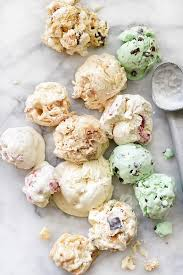

A New Adventure In Ice Cream
We believe that simple nature food tastes best.
Our Ice Cream is lovingly Handmade in small batches in the
heart using only simple,
natural and fresh local ingredient of adventure and discovery.
The Core Flavor's

The Benefits of Ice Cream
- Packed With Essential Nutrients
- Instant Energy Boost
- An Immunity Ally
- Brain Stimulation
- Bone-Strengthening Benefits
- The Happiness Factor
- Libido Lift
- A Protevtive Shield Against Breast Cancer
- A weight-Loss Friend
- Fertility Suppor
Flavor's Of Ice Cream Homemade
- CHOCOLATE
- VANILLA
- COOKIES & CREAM
- UBE
- STRAWBERRY
- MANGO
- COCONUT
What Do You Need To Make Homemade Ice Cream?
Ingredients
- 8 egg yolks
- 1 cup granulated sugar, divided
- 1 cup heavy cream
- 3 cups half-and-half
- Pinch salt
- 1 tablespoon vanilla extract (optional)
Equipments
- Bowls
- Measuring cups and spoons
- Saucepan
- Whisk
- Heatproof Spatula
- Fine-mesh sieve
- Ice Cream Maker
- Freezer container
Directions
- In a medium bowl, whisk together the egg yolks and half of the sugar. Set aside.
- In a medium saucepan, stir together the cream, half-and-half, salt, and remaining sugar.
Heat the mixture over medium-high heat, stirring often, until it comes to a simmer, then reduce heat to medium.
- Add about 1/2 cup of the cream mixture to the egg mixture while whisking constantly (this helps prevent the eggs from cooking).
Repeat with another 1/2 cup of the cream mixture.
4. Using a heatproof spatula, stir the cream mixture in the saucepan constantly as you pour the egg mixture into the pan.
5. Cook, stirring constantly, until thickened and mixture coats the back of the spatula, 1 to 2 minutes longer. Remove from heat.
6. Strain the mixture through a fine-mesh sieve into a clean bowl and whisk in the vanilla extract.
Set the bowl in an ice bath and stir the base occasionally until it's cooled to room temperature.
Remove the bowl from the ice bath, cover with plastic wrap, and refrigerate at least 2 to 4 hours or overnight before churning,
either in an ice cream machine or by hand (see below for tips on how to churn ice cream).
Adding Flavors To Homemade Ice Cream
Popular add-ins include ripe summer fruits, chocolate, and toasted nuts.
Other good choices? Vanilla beans, lavender, green tea, fresh peppermint, and candied ginger.
Tips: How to Add Flavors to Ice Cream
- Infuse herbs and spices into the mixture as you heat the milk. Strain them out before proceeding with the recipe.
- If you're cooking a custard base, let it cool slightly before adding extracts, liqueurs, and flavoring oils (citrus, peppermint, cinnamon).
- To get the most flavor from a vanilla bean, split it lengthwise with a sharp knife and scrape the seeds into the milk. After the bean has steeped, remove the pod and rinse in cold water and pat dry. "Used" vanilla beans are still powerfully aromatic, and can be stored in a canister of plain granulated sugar to make vanilla sugar.
- Add perfectly ripe fruits and berries to your ice cream base: Sprinkle fruit with sugar and crush it with a potato masher before mixing it in.
This adds much more flavor than plain chunks of fruit stirred into the mix.
- To add nuts, chocolate, crumbled cookies, or whole berries, let the ice cream reach the consistency of soft-serve, and then stir in the garnishes;
pack in airtight containers and freeze until firm.